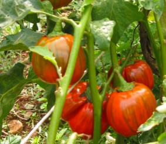

Melanzana Rossa di Rotonda DOP
La
Melanzana Rossa di Rotonda (
Solanum aethiopicum), detta localmente
"Merlingiana a Pummadora" per la sua somiglianza con il pomodoro è coltivata unicamente a Rotonda.
Di origine africana è stata importanta alla fine del XIX secolo da Rotondesi di ritorno dall'Etiopia al tempo dell'avventura coloniale italiana.